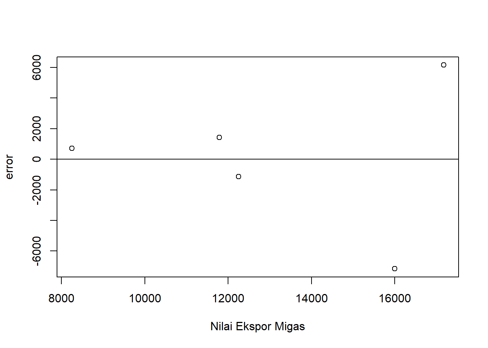
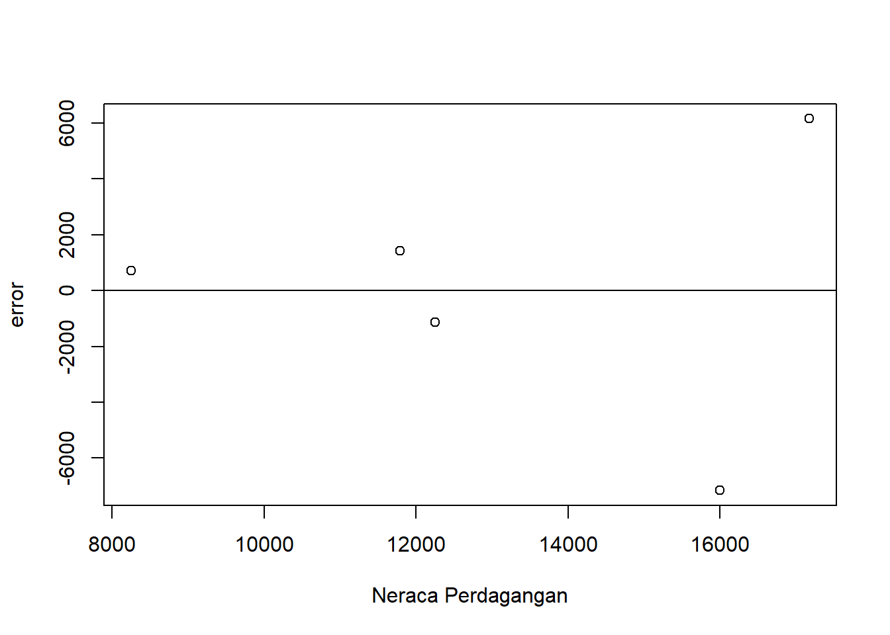

library(tidyverse)
library(readxl)Pengaruh Nilai Ekspor Migas terhadap Neraca Perdagangan Indonesia Tahun 2018-2022
Metode Penelitian Politeknik APP Jakarta

1 Pendahuluan
1.1 Latar belakang
Dalam perdagangan internasional terdapat kegiatan ekspor dan impor antar negara yang saling membutuhkan komoditas dan jasa dalam kegiatan perekonomian internasional. Ekspor adalah pembelian negara lain atas barang buatan perusahaan-perusahaan di dalam negeri. Faktor terpenting yang menentukan ekspor adalah kemampuan dari Negara tersebut untuk mengeluarkan barangbarang yang dapat bersaing dalam pasaran luar negeri. (Sukirno, 2008: 205). Ekspor akan secara langsung mempengaruhi pendapatan nasional. Akan tetapi, hubungan yang sebaliknya tidak selalu berlaku, yaitu kenaikan pendapatan nasional belum tentu menaikkan ekspor oleh karena pendapatan nasional dapat mengalami kenaikan sebagai akibat dari kenaikan pengeluaran rumah tangga, investasi perusahaan, pengeluaran pemerintah dan penggantian barang impor dengan barang buatan dalam negeri.(Sukirno, 2008:206).
Neraca perdagangan merupakan salah satu komponen penting dari neraca transaksi berjalan yang mencatat arus ekspor dan impor barang yang biasanya di nyatakan dalam dolar AS. Hal yang sama dikemukakan oleh Pujoalwanto (2014) menjelaskan neraca perdagangan adalah suatu catatan atau ikhtisar yang memuat atau mencatat semua transaksi ekspor dan transaksi impor barang suatu Negara. Ekspor barang di catat di sisi kredit sedangkan impor barang dicatat di sisi debit, pada neraca perdagangan biasanya di bedakan antara ekspor dan impor primer (pertambangan dan pertanian) dengan ekspor dan impor non primer. Dalam prakteknya di Indonesia, neraca perdagangan ini dibagi menjadi dua jenis yaitu impor-ekspor migas dan impor-ekspor nonmigas. Neraca perdagangan dikatakan defisit bila nilai ekspor yang lebih kecil dari impornya dan dikatakan surplus bila ekspor barang lebih besar dari impornya dan dikatakan neraca perdagangan yang berimbang jika nilai ekspor suatu negara sama dengan nilai impor yang dilakukan negara tersebut, peningkatan ekspor akan berdampak terhadap meningkatnya neraca perdagangan, dan sebaliknya.
Ekspor migas adalah penjualan barang minyak dan gas Indonesia ke negara lain dalam bentuk dolar. Ini termasuk produk minyak yang dihasilkan, minyak mentah yang dihasilkan dari penambangan, gas elpiji dan gas lainnya yang dihasilkan, dan gas alam yang dihasilkan dari penambangan. Indonesia merupakan salah satu negara penghasil migas di dunia. Peningkatan ekspor Indonesia secara kumulatif didorong oleh ekspor migas yang masih tumbuh sangat tinggi dan menunjukkan pertumbuhan yang konsisten disebabkan oleh faktor volume akibat peningkatan permintaan dari beberapa negara tujuan utama serta pengaruh harga komoditas.
1.2 Ruang lingkup
Ruang lingkup penelitian ini terdapat 2 variabel antara lain nilai ekspor migas Indonesia dan neraca perdagangan Indonesia. Data yang digunakan adalah data yang bersifat time series yaitu dalam kurun waktu 2018-2022 dengan satuan yang telah diubah ke dalam USD guna untuk memudahkan penyetaraan mata uang secara internasional, data inilah yang kemudian menjadi objek penelitian.
1.3 Rumusan masalah
Berdasarkan uraian latar belakang diatas maka yang menjadi masalah pokok pada penelitian ini adalah:
- Apakah ekspor migas mempengaruhi neraca perdagangan Indonesia?
- Bagaimana hubungan antara ekspor migas denga neraca perdagangan Indonesia?
1.4 Tujuan dan manfaat penelitian
Tujuan penelitian ini untuk mengetahui pengaruh ekspor migas terhadap neraca perdagangan Indonesia dan hubungan antara keduanya di tahun terkait.
Manfaat penelitian ini agar masyarakat mengerti bahwa adanya pengaruh ekspor migas terhadap neraca perdagangan Indonesia dan bagaimana hubungan ekspor migas terhadap neraca perdagangan Indonesia.
1.5 Package
Ini tidak wajib ada di tulisan anda tapi anda dapat menunjukkan Packages yang digunakan antara lain sebagai berikut:
2 Studi pustaka
Tujuan ekspor komoditas minyak dan gas Indonesia adalah untuk meningkatkan ekonomi bangsa dan memperluas pasar domestik dan internasional. Menurut Undang-Undang Nomor 22 Tahun 2001 Tentang Minyak dan Gas Bumi Pasal 1angka 1 dalam Fajar (2013:3) Menyebutkan bahwa:Minyak Bumi adalah hasil proses alami berupa hidrokarbon yang dalam kondisi tekanan dan temperatur atmosfer berupa fasa cair atau padat, termasuk aspal, lilin mineral atau ozokerit, dan bitumen yang diperoleh dari proses penambangan, tetapi tidak termasuk batu bara atau endapan hidrokarbon lain yang berbentuk padat yang diperoleh dari kegiatan yang tidak berkaitan dengan kegiatan usaha Minyak dan Gas Bumi. Pengertian Gas Bumi menurut Undang-Undang Nomor 22 Tahun 2001 Tentang Minyak dan Gas Bumi Pasal 1 angka 2 Menyebutkan bahwa : “Gas Bumi adalah hasil proses alami berupa hidrokarbon yang dalam kondisi tekanandan temperatur atsmofer berupa fasa gas yang diperoleh dari proses penambangan Minyak dan Gas Bumi.
3 Metode penelitian
3.1 Data
| Tahun | Nilai Ekspor Migas (X) | Neraca Perdagangan (Y) |
|---|---|---|
| 2018 | 17.171,7 | -12.697,10 |
| 2019 | 11.789,3 | -10.096,10 |
| 2020 | 8.251,1 | -6.005,70 |
| 2021 | 12.247,4 | -13.281,70 |
| 2021 | 15.998,2 | -24.418,10 |
setwd('C:/Users/Azza Indah K/OneDrive/AZZA INDAH K/METOPEN UAS INDIVIDU')
library('readxl')
dat<-read_excel('Nilai Ekspor dan Neraca Perdagangan Migas.xlsx')
reg1<-lm(Y~X,data=dat)
dat$u<-resid(reg1)
plot(dat$X,dat$u,xlab="Nilai Ekspor Migas",ylab="error")
abline (h=0)
Plot Pengaruh Error Terhadap Nilai Ekspor Migas (X)
library('readxl')
dat<-read_excel('Nilai Ekspor dan Neraca Perdagangan Migas.xlsx')
reg1<-lm(Y~X,data=dat)
dat$u<-resid(reg1)
plot(dat$X,dat$u,xlab="Neraca Perdagangan",ylab="error")
abline(h=0)
Plot Pengaruh Error Terhadap Neraca Perdagangan (Y)
3.2 Metode analisis
Metode yang dipilih adalah regresi univariat atau Ordinary Least Square (OLS) dengan 1 variabel independen. Penelitian ini merbaksud mencari hubungan antara Nilai Ekspor Migas dan Neraca Perdagangan. Spesifikasi yang dilakukan adalah:
\[ y_{t}=\beta_0 + \beta_1 x_t+\mu_t \] di mana \(y_t\) adalah Y dan \(x_t\) adalah X. Y adalah Neraca Perdagangan dan X adalah Nilai Ekspor Migas.
4 Pembahasan
4.1 Pembahasan masalah
| Variable | Coefficient | Std. Error | t- value | Prob(.) |
|---|---|---|---|---|
| Intercept | 4542.5261 | 10513.4990 | 0.430 | 0.696 |
| X | -1.3616 | 0.7802 | -1.745 | 0.179 |
| R squarred | 0.5038 | |||
| Adjusted R squared | 0.3383 | |||
| F- Statistic | 3.045 | |||
| Prob (F- Statistic) | 0.1793 |
Hasil regresi yang diperoleh dimasukan ke dalam persamaan rumus, sehingga rumusnya menjadi :\[Y = 4542.5261 + (-1.3616X)\]
Nilai Ekspor Migas tidak berperan positif dalam neraca perdagangan karena setiap 1 nilai ekspor bertambah itu berpengaruh negatif terhadap neraca perdagangan.
4.2 Analisis masalah
Hasil regresinya adalah
reg1<-lm(Y~X,data=dat)
summary(reg1)
Call:
lm(formula = Y ~ X, data = dat)
Residuals:
1 2 3 4 5
6158.1 1430.5 703.4 -1131.3 -7160.7
Coefficients:
Estimate Std. Error t value Pr(>|t|)
(Intercept) 4525.5261 10513.4990 0.430 0.696
X -1.3616 0.7802 -1.745 0.179
Residual standard error: 5568 on 3 degrees of freedom
Multiple R-squared: 0.5038, Adjusted R-squared: 0.3383
F-statistic: 3.045 on 1 and 3 DF, p-value: 0.1793Dapat dilihat dari tabel di atas bahwa ketika nilai ekspor migas (X) adalah nol,diperkirakan neraca perdagangan (Y) akan naik sekitar 4525.53. Sedangkan jika nilai ekspor migas mengalami kenaikan 1, neraca perdagangan mengalami penurunan sebesar 1.3616.
5 Kesimpulan
Setelah dilakukan penelitian melalui sistem regresi univariat atau OLS (Ordinary Least Square),maka dapat disimpulkan bahwa nilai ekspor migas berpengaruh negatif terhadap neraca perdagangan dan sebaliknya. Dikarenakan jika nilai ekspor migas naik, neraca perdagangan mengalami penurunan.
6 Referensi
Khalwat Asyaria, - and Risanda A. Budiantoro, - and Sri Herianingrum, - (2020) Analisis Neraca Perdagangan Migas dan Non Migas Terhadap Volatilitas Cadangan Devisa Di Indonesia, 1975-2016. Jurnal Manajemen dan Bisnis Indonesia, 6 (1). pp. 38-45. ISSN pISSN: 2443-2830, eISSN: 2460-9471
Rizquna : Jurnal Hukum dan Ekonomi SyariahVolume 1, Nomor 4, April-Juni2023. ISSN 2962-3057 (Online) dan ISSN 29623847(Cetak) https://journal.citradharma.org/index.php/rizquna
DOI: https://doi.org/10.56480/rizquna.v1i4/880
Kinerja Ekspor dan Impor Terus Menguat, Neraca Perdagangan Indonesia Tercatat Surplus 29 Bulan Berturut-Turut
https://www.kemenkeu.go.id/informasi-publik/publikasi/berita-utama/surplus-neraca-perdagangan
Neraca Perdagangan Indonesia
https://satudata.kemendag.go.id/data-informasi/perdagangan-luar-negeri/neraca-perdagangan-indonesia
Nilai Ekspor dan Impor Migas (juta US$) 1996-2022